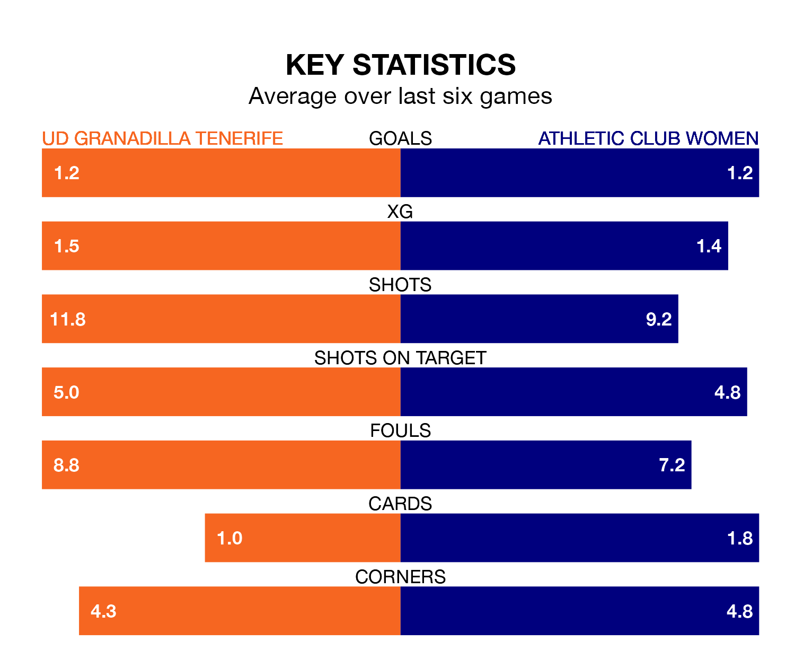

UD Granadilla Tenerife host Athletic Club Women on Sunday at the Estadio La Palmera in Primera Division Women.
In their last league match, on January 7, Granadilla Tenerife drew with Real Sociedad Women 3-3 away, with goals from Gift Monday, Jassina Blom and María José Pérez.
Athletic Club won, 2-0 at home against Eibar Women, with Jone Amezaga and Nahikari García Pérez on the scoresheet.
In Aline Villares Reis, Granadilla Tenerife can rely on one of the league's safest pair of hands. She has kept four clean sheets in her 13 appearances this season in Primera Division Women.
In Athletic Club's net, Adriana Nanclares Romero also has four clean sheets in eight games.
With 14 goals in 13 games so far this season, the visitors are scoring at below the league average rate with 1.1 goals per game. But they are conceding fewer than average too, letting in 18 goals at a rate of 1.4 per game.
The home side are also below average scorers, with 1.3 goals per game, compared to a league average of 1.6. They have conceded 1.6 goals per game.
Granadilla Tenerife are in disappointing form in Primera Division Women, with one win and two draws from their last six games.
With three wins and a draw over that period, Athletic Club's form is better – they have taken 10 points from 18, compared to Granadilla Tenerife's five.
In the last five years, Granadilla Tenerife and Athletic Club have played each other on eight occasions. Granadilla Tenerife won five of them, Athletic Club two, and they drew once.
On average, Granadilla Tenerife scored 1.6 goals and Athletic Club 1.1 in those matches.
Their last meeting was on February 4, when Granadilla Tenerife won 1-0 away.
Athletic Club are seventh in the table after 13 games, of which they have won six and drawn one, earning 19 points.
The hosts are two places behind the away team in ninth, with five wins and two draws putting them on 17 points.
Updated: 10:50, 10/01/24